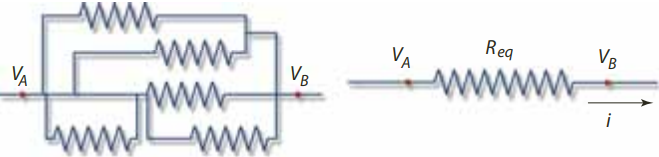
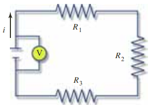
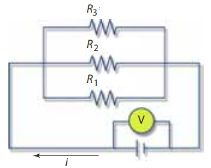

Propósito: Registrar mediante los laboratorios virtuales datos confiables.
Tiempo estimado: 50 minutos.
Propósito: Registrar mediante los laboratorios virtuales datos confiables.
Tiempo estimado: 50 minutos.
En un circuito pueden usarse varias resistencias. En esta situación se define la resistencia equivalente (Req) de un conjunto de resistencias, como el valor de una resistencia hipotética por la cual al aplicarle la misma diferencia de potencial que al conjunto, circula la misma intensidad de corriente eléctrica que en el conjunto.

De acuerdo a como se configuren las resistencias se puede hablar de un circuito en serie o en paralelo.
En un circuito en serie las resistencias están conectadas una a continuación de la otra, debido a esto la intensidad de la corriente que fluye por cada una es la misma.

En un circuito en paralelo las resistencias se encuentran unidas en sus extremos, por lo que la diferencia de potencial de cada resistencia es la misma.

En el siguiente video se puede encontrar la deducción de las resistencias equivalentes en un circuito en serie y un circuito en paralelo.
Interactuar con el siguiente simulador de Construcción de Circuitos con corriente directa para tener presente que características tiene. Una vez terminada la exploración puede pasar a la Actividad sesión 4 para su implementación y así poder realizar la verificación de los aprendizajes.
Obra publicada con Licencia Creative Commons Reconocimiento Compartir igual 4.0